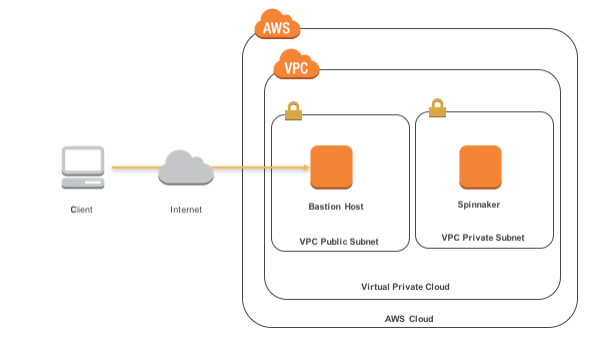
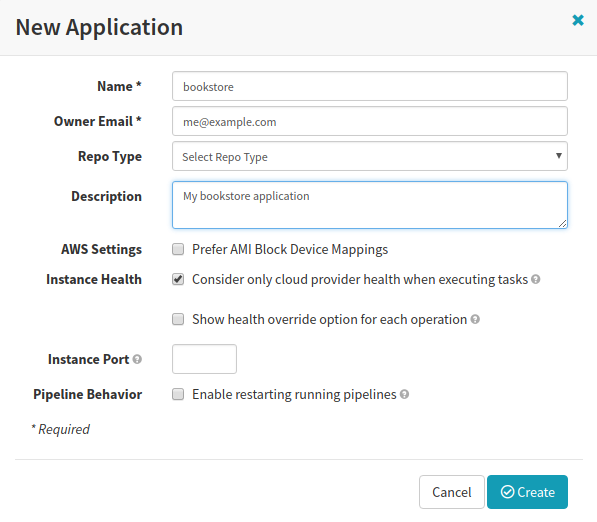
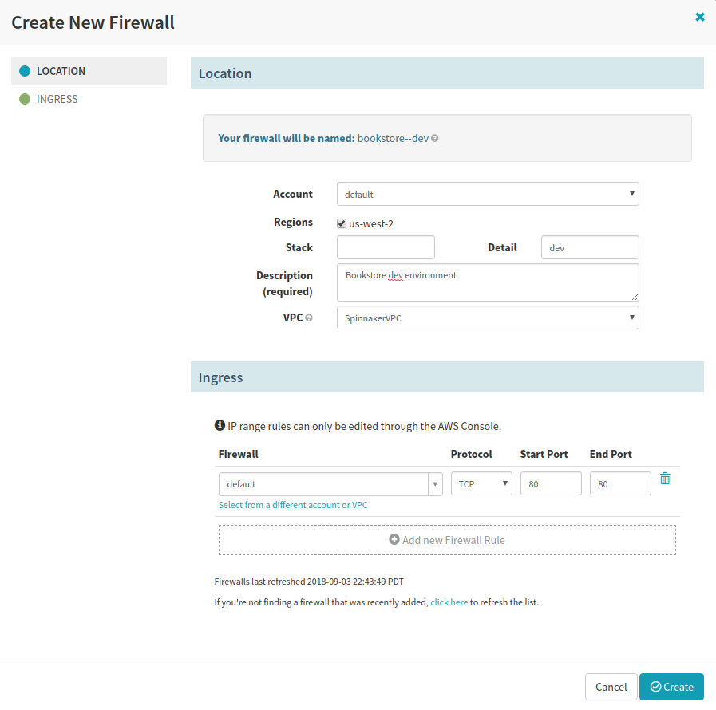
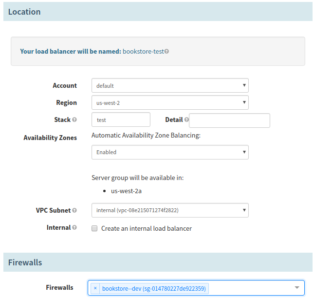
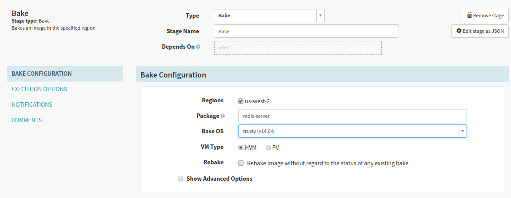
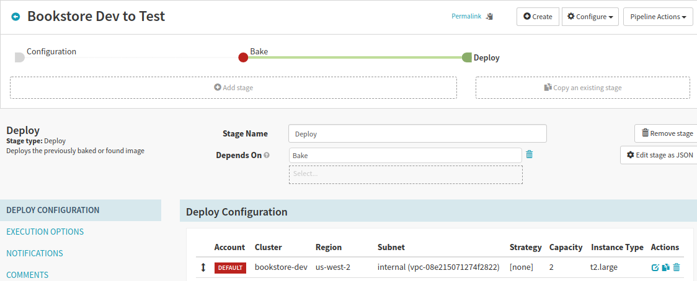
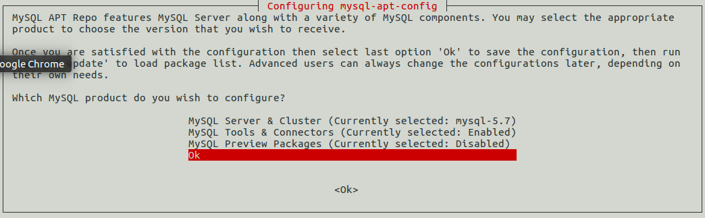
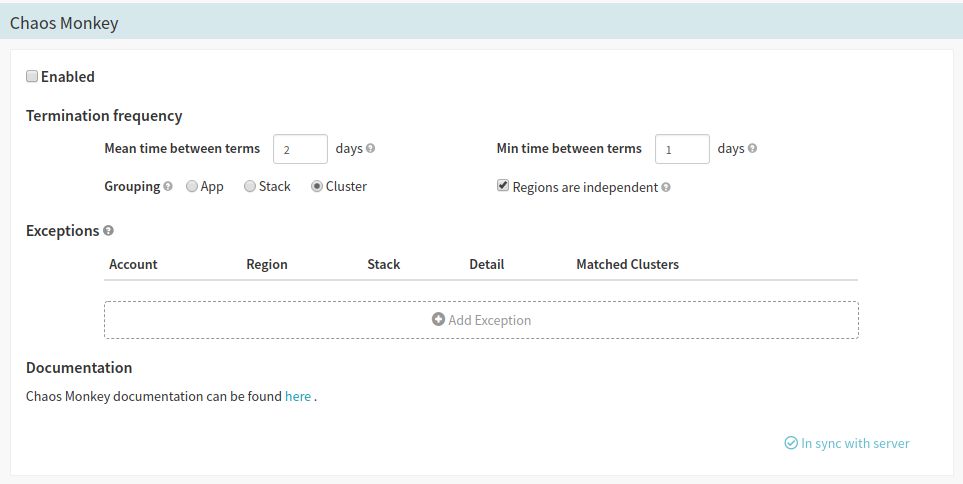

Chaos Monkey Tutorial - A Step-by-Step Guide to Creating Failure on AWS
This chapter will provide a step-by-step guide for setting up and using Chaos Monkey with AWS. We also examine a handful of scenarios in which Chaos Monkey is not always the most relevant solution for Chaos Engineering implementation, due to its Spinnaker requirements and limited scope of only handling instance terminations.
How to Quickly Deploy Spinnaker for Chaos Monkey
Modern Chaos Monkey requires the use of Spinnaker, which is an open-source, multi-cloud continuous delivery platform developed by Netflix. Spinnaker allows for automated deployments across multiple cloud platforms (such as AWS, Azure, Google Cloud Platform, and more). Spinnaker can also be used to deploy across multiple accounts and regions, often using pipelines that define a series of events that should occur every time a new version is released. Spinnaker is a powerful tool, but since both Spinnaker and Chaos Monkey were developed by and for Netflix’s own architecture, you’ll need to do the extra legwork to configure Spinnaker to work within your application and infrastructure.
That said, in this first section we’ll explore the fastest and simplest way to get Spinnaker up and running, which will then allow you to move onto installing and then using.
We’ll be deploying Spinnaker on AWS, and the easiest method for doing so is to use the CloudFormation Quick Start template.
Looking to Deploy Spinnaker In Another Environment?
If you’re looking for the utmost control over your Spinnaker deployment you should check out our [How to Deploy a Spinnaker Stack for Chaos Monkey][#spinnaker-manual] guide, which provides a step-by-step tutorial for setting up Halyard and Spinnaker on a local or virtual machine of your choice.
The AWS Spinnaker Quick Start will create a simple architecture for you containing two subnets (one public and one private) in a Virtual Private Cloud (VPC). The public subnet contains a Bastion host instance designed to be strictly accessible, with just port 22 open for SSH access. The Bastion host will then allow a pass through connection to the private subnet that is running Spinnaker.

AWS Spinnaker Quick Start Architecture - Courtesy of AWS
This quick start process will take about 10 - 15 minutes and is mostly automated.
Creating the Spinnaker Stack
- (Optional) If necessary, visit https://aws.amazon.com/ to sign up for or login to your AWS account.
-
(Optional) You’ll need at least one AWS EC2 Key Pair for securely connecting via SSH.
- If you don’t have a KeyPair already start by opening the AWS Console and navigate to EC2 > NETWORK & SECURITY > Key Pairs.
- Click Create Key Pair and enter an identifying name in the Key pair name field.
- Click Create to download the private
.pemkey file to your local system. - Save this key to an appropriate location (typically your local user
~/.sshdirectory).
- After you’ve signed into the AWS console visit this page, which should load the
quickstart-spinnakercf.template. - Click Next.
- (Optional) If you haven’t already done so, you’ll need to create at least one AWS Access Key.
- Select the KeyName of the key pair you previously created.
- Input a secure password in the Password field.
-
(Optional) Modify the IP address range in the SSHLocation field to indicate what IP range is allowed to SSH into the Bastion host. For example, if your public IP address is
1.2.3.4you might enter1.2.3.4/32into this field. If you aren’t sure, you can enter0.0.0.0/0to allow any IP address to connect, though this is obviously less secure. - Click Next.
- (Optional) Select an IAM Role with proper CloudFormation permissions necessary to deploy a stack. If you aren’t sure, leave this blank and deployment will use your account’s permissions.
- Modify any other fields on this screen you wish, then click Next to continue.
-
Check the I acknowledge that AWS CloudFormation might create IAM resources with custom names. checkbox and click Create to generate the stack.
If your AWS account already contains the
BaseIAMRoleAWS::IAM::Role you may have to delete it before this template will succeed. - Once the
Spinnakerstack has aCREATE_COMPLETEStatus, select the Outputs tab, which has some auto-generated strings you’ll need to paste in your terminal in the next section.
Connecting to the Bastion Host
- Copy the Value of the SSHString1 field from the stack Outputs tab above.
-
Execute the SSHString1 value in your terminal and enter
yeswhen prompted to continue connecting to this host.ssh -A -L 9000:localhost:9000 -L 8084:localhost:8084 -L 8087:localhost:8087 ec2-user@54.244.189.78Permission denied (publickey).
If you received a permission denied SSH error you may have forgotten to place your
.pemprivate key file that you downloaded from the AWS EC2 Key Pair creation page. Make sure it is located in your~/.sshuser directory. Otherwise you can specify the key by adding an optional-i <identify_file_path>flag, indicating the path to the.pemfile. -
You should now be connected as the
ec2-userto the Bastion instance. Before you can connect to the Spinnaker instance you’ll probably need to copy your.pemfile to the Spinnaker instance’s~/.sshdirectory.-
Once the key is copied, make sure you set proper permissions otherwise SSH will complain.
chmod 400 ~/.ssh/my_key.pem
-
Connecting to the Spinnaker Host
-
To connect to the Spinnaker instance copy and paste the SSHString2 Value into the terminal.
ssh –L 9000:localhost:9000 -L 8084:localhost:8084 -L 8087:localhost:8087 ubuntu@10.100.10.167 -i ~/.ssh/my_key.pem -
You should now be connected to the
SpinnakerWebServer!System restart required
Upon connecting to the Spinnaker instance you may see a message indicating the system needs to be restarted. You can do this through the AWS EC2 console, or just enter the
sudo rebootcommand in the terminal, then reconnect after a few moments.
Configuring Spinnaker
The Spinnaker architecture is composed of a collection of microservices that each handle various aspects of the entire service. For example, Deck is the web interface you’ll spend most time interacting with, Gate is the API gateway that handles most communication between microservices, and CloudDriver is the service that communicates and configures all cloud providers Spinnaker is working with.
Since so much of Spinnaker is blown out into smaller microservices, configuring Spinnaker can require messing with a few different files. If there’s an issue you’ll likely have to look through individual logs for each different service, depending on the problem.
Spinnaker is configured through /opt/spinnaker/config/spinnaker.yml file. However, this file will be overwritten by Halyard or other changes, so for user-generated configuration you should actually modify the /opt/spinnaker/config/spinnaker-local.yml file. Here’s a basic example of what that file looks like.
# /opt/spinnaker/config/spinnaker-local.yml
global:
spinnaker:
timezone: 'America/Los_Angeles'
providers:
aws:
# For more information on configuring Amazon Web Services (aws), see
# http://www.spinnaker.io/v1.0/docs/target-deployment-setup#section-amazon-web-services-setup
enabled: ${SPINNAKER_AWS_ENABLED:false}
defaultRegion: ${SPINNAKER_AWS_DEFAULT_REGION:us-west-2}
defaultIAMRole: Spinnaker-BaseIAMRole-GAT2AISI7TMJ
primaryCredentials:
name: default
# Store actual credentials in $HOME/.aws/credentials. See spinnaker.yml
# for more information, including alternatives.
# will be interpolated with the aws account name (e.g. "my-aws-account-keypair").
defaultKeyPairTemplate: "-keypair"
# ...
Standalone Spinnaker installations (such as the one created via the AWS Spinnaker Quick Start) are configured directly through the spinnaker.yml and spinnaker-local.yml override configuration files.
Creating an Application
In this section we’ll manually create a Spinnaker application containing a pipeline that first bakes a virtual machine image and then deploys that image to a cluster.
- Open the Spinnaker web UI (Deck) and click Actions > Create Application.
- Input
bookstorein the Name field. - Input your own email address in the Owner Email field.
- (Optional) If you’ve enabled Chaos Monkey in Spinnaker you can opt to enable Chaos Monkey by checking the Chaos Monkey > Enabled box.
- Input
My bookstore applicationin the Description field. - Under Instance Health, tick the Consider only cloud provider health when executing tasks checkbox.
- Click Create to add your new application.

Adding a Firewall
- Navigate to the
bookstoreapplication, INFRASTRUCTURE > FIREWALLS, and click Create Firewall. - Input
devin the Detail field. - Input
Bookstore dev environmentin the Description field. - Within the VPC dropdown select
SpinnakerVPC. - Under the Ingress header click Add new Firewall Rule. Set the following Firewall Rule settings.
-
Firewall:
default -
Protocol:
TCP -
Start Port:
80 -
End Port:
80
-
Firewall:
- Click the Create button to finalize the firewall settings.

Adding a Load Balancer
- Navigate to the
bookstoreapplication, INFRASTRUCTURE > LOAD BALANCERS, and click Create Load Balancer. - Select Classic (Legacy) and click Configure Load Balancer.
- Input
testin the Stack field. - In the VPC Subnet dropdown select
internal (vpc-...). - In the Firewalls dropdown select
bookstore--dev (...). - Click Create to generate the load balancer.

Creating a Pipeline in Spinnaker
The final step is to add a pipeline, which is where we tell Spinnaker what it should actually “do”! In this case we’ll tell it to bake a virtual machine image containing Redis, then to deploy that image to our waiting EC2 instance.
- Navigate to the
bookstoreapplication, PIPELINES and click Create Pipeline. - Select
Pipelinein the Type dropdown. - Input
Bookstore Dev to Testin the Pipeline Name field. - Click Create.
Adding a Bake Stage
- Click the Add stage button.
- Under Type select
Bake. - Input
redis-serverin the Package field. - Select
trusty (v14.04)in the Base OS dropdown. - Click Save Changes to finalize the stage.

Ignoring Jenkins/Travis
In production environments you’ll likely also want to incorporate Travis, Jenkins, or another CI solution as a preceding stage to the bake stage. Otherwise, Spinnaker will default to baking and deploying the most recently built package. For our purposes here we don’t care, since we’re using an unchanging image.
Adding a Deploy Stage
- Click the Add stage button.
- Under Type select
Deploy. - Click the Add server group button to begin creating a new server group.
Adding a Server Group
- Select
internal (vpc-...)in the VPC Subnet dropdown. - Input
devin the Stack field. - Under Load Balancers > Classic Load Balancers select the
bookstore-devload balancer we created. - Under Firewalls > Firewalls select the
bookstore--devfirewall we also created. - Under Instance Type select the Custom Type of instance you think you’ll need. For this example we’ll go with something small and cheap, such as
t2.large. - Input
3in the Capacity > Number of Instances field. - Under Advanced Settings > Key Name select the key pair name you used when deploying your Spinnaker CloudFormation stack.
- In the Advanced Settings > IAM Instance Profile field input the Instance Profile ARN value of the
BaseIAMRolefound in the AWS > IAM > Roles > BaseIAMRole dialog (e.g.arn:aws:iam::0123456789012:instance-profile/BaseIAMRole). - We also need to ensure the
user/Spinnaker-SpinnakerUserthat was generated has permissions to perform to pass therole/BasIAMRolerole during deployment.- Navigate to AWS > IAM > Users > Spinnaker-SpinnakerUser-### > Permissions.
- Expand
Spinnakerpassrolepolicy and click Edit Policy. - Select the JSON tab and you’ll see the auto-generated
Spinnaker-BaseIAMRolelisted inResources. -
Convert the
Resourcekey value to an array so you can add a second value. Insert the ARN for therole/BaseIAMRoleof your account (the account number will match the number above).{ "Version": "2012-10-17", "Statement": [ { "Sid": "VisualEditor0", "Effect": "Allow", "Action": "iam:PassRole", "Resource": [ "arn:aws:iam::123456789012:role/Spinnaker-BaseIAMRole-6D9LJ9HS4PZ7", "arn:aws:iam::123456789012:role/BaseIAMRole" ] } ] } - Click Review Policy and Save Changes.
- Click the Add button to create the deployment cluster configuration.
- Finally, click Save Changes again at the bottom of the Pipelines interface to save the full
Configuration > Bake > Deploypipeline. - You should now have a
Bookstore Dev to Testtwo-stage pipeline ready to go!

Executing the Pipeline
- Navigate to the
bookstoreapplication, select Pipelines, and click Start Manual Execution next to theBookstore Dev to Testpipeline. - Click Run to begin manual execution.
- After waiting a few moments, assuming none of the potential setbacks below bite you, you’ll shortly see output indicating the
bookstore-dev-v000Server Group has been successfully created. Browse over to AWS > EC2 and you’ll see your three new instances launched!

To resize this Server Group use the Resize Server Group dialog in Spinnaker. Alternatively, you can find additional options under Server Group Actions, such as Disable or Destroy to stop or terminate instances, respectively.
Troubleshooting Pipeline Executions
While a lot can go wrong, below are a few potential issues you may encounter running through this tutorial, depending on changes to software versions, default configurations, and the like between present and time of writing.
Error: Unknown configuration key `ena_support`
If you get an ena_support error during deployment (see: #2237) the solution is to remove the ena_support reference line within the builders block in the /opt/rosco/config/packer/aws-ebs.json Rosco configuration file.
sudo nano /opt/rosco/config/packer/aws-ebs.json
{
"builders": {
"aws_ena_support": "{{user `aws_ena_support`}}",
},
}
Error: `0.000000` is an invalid spot instance price
If you get such an error during deployment (see: #2889) the solution is to remove spot_price reference lines within the builders block in the /opt/rosco/config/packer/aws-ebs.json Rosco configuration file.
sudo nano /opt/rosco/config/packer/aws-ebs.json
{
"builders": {
"spot_price": "{{user `aws_spot_price`}}",
"spot_price_auto_product": "{{user `aws_spot_price_auto_product`}}",
},
}
Error: Bake stage failure after provisioning `install_packages.sh` script
This error is typically due to an outdated install_packages.sh script. To resolve this override with the latest downloaded version.
sudo curl https://raw.githubusercontent.com/spinnaker/rosco/master/rosco-web/config/packer/install_packages.sh --output /opt/rosco/config/packer/install_packages.sh
How to Install Chaos Monkey
Before you can use Chaos Monkey you’ll need to have Spinnaker deployed and running. We’ve created a handful of step-by-step tutorials for deploying Spinnaker, depending on the environment and level of control you’re looking for.
- How to Quickly Deploy Spinnaker for Chaos Monkey will guide you through a rapid deployment of Spinnaker on AWS.
- How to Deploy a Spinnaker Stack for Chaos Monkey provides a much more in-depth tutorial for installing Spinnaker as it was intended, with the help of the Halyard tool, on a local or virtual machine.
Installing MySQL
Chaos Monkey requires MySQL, so make sure it’s installed on your local system.
Warning
Chaos Monkey is currently incompatible with MySQL version 8.0 or higher, so 5.X is recommended.
-
Download the latest
mysql-apt.debfile from the official website, which we’ll use to install MySQLcurl -OL https://dev.mysql.com/get/mysql-apt-config_0.8.10-1_all.deb -
Install
mysql-serverby using thedpkgcommand.sudo dpkg -i mysql-apt-config_0.8.10-1_all.deb -
In the UI that appears press enter to change the MySQL Server & Cluster version to
mysql-5.7. Leave the other options as default and move down toOkand pressEnterto finalize your choice.
-
Now use
sudo apt-get updateto update the MySQL packages related to the version we selected (mysql-5.7, in this case).sudo apt-get update -
Install
mysql-serverfrom the packages we just retrieved. You’ll be prompted to enter arootpassword.sudo apt-get install mysql-server -
You’re all set. Check that MySQL server is running with
systemctl.systemctl status mysql -
(Optional) You may also wish to issue the
mysql_secure_installationcommand, which will walk you through a few security-related prompts. Typically, the defaults are just fine.
Setup MySQL for Chaos Monkey
We now need to add a MySQL table for Chaos Monkey to use and create an associated user with appropriate permissions.
-
Launch the
mysqlCLI as therootuser.mysql -u root -p -
Create a
chaosmonkeydatabase for Chaos Monkey to use.CREATE DATABASE chaosmonkey; -
Add a
chaosmonkeyMySQL user.CREATE USER 'chaosmonkey'@'localhost' IDENTIFIED BY 'password'; -
Grant all privileges in the
chaosmonkeydatabase to the newchaosmonkeyuser.GRANT ALL PRIVILEGES ON chaosmonkey.* TO 'chaosmonkey'@'localhost'; -
Finally, save all changes made to the system.
FLUSH PRIVILEGES;
Installing Chaos Monkey
-
(Optional) Install
goif you don’t have it on your local machine already.-
Go to this download page and download the latest binary appropriate to your environment.
curl -O https://dl.google.com/go/go1.11.linux-amd64.tar.gz -
Extract the archive to the
/usr/localdirectory.sudo tar -C /usr/local -xzf go1.11.linux-amd64.tar.gz -
Add
/usr/local/go/binto your$PATHenvironment variable.export PATH=$PATH:/usr/local/go/bin echo 'export PATH=$PATH:/usr/local/go/bin' >> ~/.bashrc
-
-
(Optional) Check if the
$GOPATHand$GOBINvariables are set withecho $GOPATHandecho $GOBIN. If not,exportthem and add them to your bash profile.export GOPATH=$HOME/go echo 'export GOPATH=$HOME/go' >> ~/.bashrc export GOBIN=$HOME/go/bin echo 'export GOBIN=$HOME/go/bin' >> ~/.bashrc export PATH=$PATH:$GOBIN echo 'export PATH=$PATH:$GOBIN' >> ~/.bashrc -
Install the latest Chaos Monkey binary.
go get github.com/netflix/chaosmonkey/cmd/chaosmonkey
Configure Spinnaker for Chaos Monkey
Spinnaker includes the Chaos Monkey feature as an option, but it is disabled by default.
-
(Optional) If necessary, enable the Chaos Monkey feature in your Spinnaker deployment.
- On a Halyard-based Spinnaker deployment you must enable the Chaos Monkey feature via the Halyard
--chaosflag.hal config features edit --chaos true - On a quick start Spinnaker deployment you’ll need to manually enable the Chaos Monkey feature flag within the
/opt/deck/html/settings.jsfile. Make sure thevar chaosEnabledis set totrue, then save and reload Spinnaker.sudo nano /opt/deck/html/settings.js// var chaosEnabled = ${services.chaos.enabled}; var chaosEnabled = true;
- On a Halyard-based Spinnaker deployment you must enable the Chaos Monkey feature via the Halyard
-
Navigate to Applications > (APPLICATION_NAME) > CONFIG and select CHAOS MONKEY in the side navigation.

- Check the Enabled box to enable Chaos Monkey.
- The UI provides useful information for what every option does, but the most important options are the mean and min times between instance termination. If your setup includes multiple clusters or stacks, altering the grouping may also make sense. Finally, you can add exceptions as necessary, which acts as a kind of whitelist of instances that will be ignored by Chaos Monkey, so you can keep the most critical services up and running.
- Once your changes are made click the Save Changes button.
How to Configure Chaos Monkey
- Start by creating the
chaosmonkey.toml, which Chaos Monkey will try to find in all of the following locations, until a configuration file is found:- (current directory)
/apps/chaosmonkey/etc/etc/chaosmonkey
Generally, if you’re configuring multiple Chaos Monkey installations on the same machine you should use application-specific configurations, so putting them in separate directories is ideal. However, if you’re just using one installation on the machine then /apps/chaosmonkey/chaosmonkey.toml works well.
-
Add the following basic configuration structure to your
chaosmonkey.tomlfile, replacing appropriate<DATABASE_>configuration values with your own settings.[chaosmonkey] enabled = true schedule_enabled = true leashed = false accounts = ["aws-primary"] start_hour = 9 # time during day when starts terminating end_hour = 15 # time during day when stops terminating # location of command Chaos Monkey uses for doing terminations term_path = "/apps/chaosmonkey/chaosmonkey-terminate.sh" # cron file that Chaos Monkey writes to each day for scheduling kills cron_path = "/etc/cron.d/chaosmonkey-schedule" [database] host = "localhost" name = "<DATABASE_NAME>" user = "<DATABASE_USER>" encrypted_password = "<DATABASE_USER_PASSWORD>" [spinnaker] endpoint = "http://localhost:8084" -
With Chaos Monkey configured it’s time to migrate it to the MySQL
$ chaosmonkey migrate [16264] 2018/09/04 14:11:16 Successfully applied database migrations. Number of migrations applied: 1 [16264] 2018/09/04 14:11:16 database migration applied successfully
Error: 1298: Unknown or incorrect time zone: 'UTC'
If you experience a timezone error this typically indicates a configuration problem with MySQL. Just run the mysql_tzinfo_to_sql command to update your MySQL installation.
mysql_tzinfo_to_sql /usr/share/zoneinfo/ | mysql -u root mysql -p
How to Use Chaos Monkey
Using the chaosmonkey command line tool is fairly simple. Start by making sure it can connect to your spinnaker instance with chaosmonkey config spinnaker.
chaosmonkey config spinnaker
# OUTPUT
(*chaosmonkey.AppConfig)(0xc00006ca00)({
Enabled: (bool) true,
RegionsAreIndependent: (bool) true,
MeanTimeBetweenKillsInWorkDays: (int) 2,
MinTimeBetweenKillsInWorkDays: (int) 1,
Grouping: (chaosmonkey.Group) cluster,
Exceptions: ([]chaosmonkey.Exception) {
},
Whitelist: (*[]chaosmonkey.Exception)(<nil>)
})
If you’re running Spinnaker on Kubernetes you can use the kubectl get nodes --watch command to keep track of your Kubernetes nodes while running Chaos Experiments.
kubectl get nodes --watch
# OUTPUT
ip-10-100-11-239.us-west-2.compute.internal Ready <none> 3d v1.10.3
ip-10-100-10-178.us-west-2.compute.internal Ready <none> 3d v1.10.3
ip-10-100-10-210.us-west-2.compute.internal Ready <none> 3d v1.10.3
To manually terminate an instance with Chaos Monkey use the chaosmonkey terminate command.
chaosmonkey terminate <app> <account> [--region=<region>] [--stack=<stack>] [--cluster=<cluster>] [--leashed]
For this example our application is spinnaker and our account is aws-primary, so using just those two values and leaving the rest default should work.
chaosmonkey terminate spinnaker aws-primary
# OUTPUT
[11533] 2018/09/08 18:39:26 Picked: {spinnaker aws-primary us-west-2 eks spinnaker-eks-nodes-NodeGroup-KLBYTZDP0F89 spinnaker-eks-nodes-NodeGroup-KLBYTZDP0F89 i-054152fc4ed41d7b7 aws}
Now look at the AWS EC2 console (or at the terminal window running kubectl get nodes --watch) and after a moment you’ll see one of the instances has been terminated.
ip-10-100-10-178.us-west-2.compute.internal Ready <none> 3d v1.10.3
ip-10-100-11-239.us-west-2.compute.internal Ready <none> 3d v1.10.3
ip-10-100-10-210.us-west-2.compute.internal NotReady <none> 3d v1.10.3
ip-10-100-10-178.us-west-2.compute.internal Ready <none> 3d v1.10.3
ip-10-100-11-239.us-west-2.compute.internal Ready <none> 3d v1.10.3

If you quickly open up the Spinnaker Deck web interface you’ll see only two of the three instances in the cluster are active, as we see in kubectl above. However, wait a few more moments and Spinnaker will notice the loss of an instance, recognize it has been stopped/terminated due to an EC2 health check, and will immediately propagate a new instance to replace it, thus ensuring the server group’s desired capacity remains at 3 instances.
For Kubernetes Spinnaker deployments, a kubectl get nodes --watch output confirms these changes (in this case, the new local ip-10-100-11-180.us-west-2.compute.internal instance was added).
ip-10-100-11-239.us-west-2.compute.internal Ready <none> 3d v1.10.3
ip-10-100-10-178.us-west-2.compute.internal Ready <none> 3d v1.10.3
ip-10-100-11-180.us-west-2.compute.internal NotReady <none> 10s v1.10.3
ip-10-100-11-239.us-west-2.compute.internal Ready <none> 3d v1.10.3
ip-10-100-10-178.us-west-2.compute.internal Ready <none> 3d v1.10.3
ip-10-100-11-180.us-west-2.compute.internal Ready <none> 20s v1.10.3
Spinnaker also tracks this information. Navigating to the your Spinnaker application INFRASTRUCTURE > CLUSTERS > spinnaker-eks-nodes-NodeGroup > CAPACITY and click View Scaling Activities to see the Spinnaker scaling activities log for this node group. In this case we see the successful activities that lead to the health check failure and new instance start.

How to Schedule Chaos Monkey Terminations
Before we get to scheduling anything you’ll want to copy the chaosmonkey executable to the /apps/chaosmonkey directory. While you can leave it in the default $GOBIN directory, it’ll be easier to use with cron jobs and other system commands if it’s in a global location.
sudo cp ~/go/bin/chaosmonkey /apps/chaosmonkey/
Now that we’ve confirmed we can manually terminate instances via Chaos Monkey you may want to setup an automated system for doing so. The primary way to do this is to create a series of scripts that regenerate a unique crontab job that is scheduled to execute on a specific date and time. This cron job is created every day (or however often you like), and the execution time is randomized based on the start_hour, end_hour, and time_zone settings in the chaosmonkey.toml configuration. We’ll be using four files for this: Two crontab files and two bash scripts.
-
Start by creating the four files we’ll be using for this.
sudo touch /apps/chaosmonkey/chaosmonkey-schedule.sh sudo touch /apps/chaosmonkey/chaosmonkey-terminate.sh sudo touch /etc/cron.d/chaosmonkey-schedule sudo touch /etc/cron.d/chaosmonkey-daily-scheduler -
Now set executable permissions for the two bash scripts so the cron (root) user can execute them.
sudo chmod a+rx /apps/chaosmonkey/chaosmonkey-schedule.sh sudo chmod a+rx /apps/chaosmonkey/chaosmonkey-terminate.sh -
Now we’ll add some commands to each script in the order they’re expected to call one another. First, the
/etc/cron.d/chaosmonkey-daily-scheduleris executed once a day at a time you specify. This will call the/apps/chaosmonkey/chaosmonkey-schedule.shscript, which will perform the actual scheduling for termination. Paste the following into/etc/cron.d/chaosmonkey-daily-scheduler(as with any cron job you can freely edit the schedule to determine when the cron job should be executed).# min hour dom month day user command 0 12 * * * root /apps/chaosmonkey/chaosmonkey-schedule.sh -
The
/apps/chaosmonkey/chaosmonkey-schedule.shscript should perform the actualchaosmonkey schedulecommand, so paste the following into/apps/chaosmonkey/chaosmonkey-schedule.sh.#!/bin/bash /apps/chaosmonkey/chaosmonkey schedule >> /var/log/chaosmonkey-schedule.log 2>&1 -
When the
chaosmonkey schedulecommand is called by the/apps/chaosmonkey/chaosmonkey-schedule.shscript it will automatically write to the/etc/cron.d/chaosmonkey-schedulefile with a randomized timestamp for execution based on the Chaos Monkey configuration. Here’s an example of what the generated/etc/cron.d/chaosmonkey-schedulelooks like.# /etc/cron.d/chaosmonkey-schedule 9 16 9 9 0 root /apps/chaosmonkey/chaosmonkey-terminate.sh spinnaker aws-primary --cluster=spinnaker-eks-nodes-NodeGroup-KLBYTZDP0F89 --region=us-west-2 -
Lastly, the
/apps/chaosmonkey/chaosmonkey-terminate.shscript that is called by the generated/etc/cron.d/chaosmonkey-schedulecron job should issue thechaosmonkey terminatecommand and output the result to the log. Paste the following into/apps/chaosmonkey/chaosmonkey-terminate.sh.#!/bin/bash /apps/chaosmonkey/chaosmonkey terminate "$@" >> /var/log/chaosmonkey-terminate.log 2>&1
Next Steps
You’re all set now! If you followed along through the entire process you should have a functional Spinnaker deployment with Chaos Monkey enabled, which will perform a cron job once a day to terminate random instances based on your configuration!
However, Chaos Monkey is just the tip of the Chaos Engineering iceberg. While using Chaos Monkey can be beneficial in certain circumstances, it’s worth remembering that you’re still limited to the (basic) tasks that the tool can accomplish. While good Chaos Engineering practices encourage resilient and thorough testing of every aspect of your system and architecture, Chaos Monkey’s ability to randomly terminate instances can be helpful, but those abilities quickly reach their limit.
The rest of this guide will cover the other tools in The Simian Army family, along with an in-depth look at the Chaos Monkey Alternatives. We built Gremlin to provide the framework to safely, securely, and easily simulate real outages with an ever-growing library of attacks.